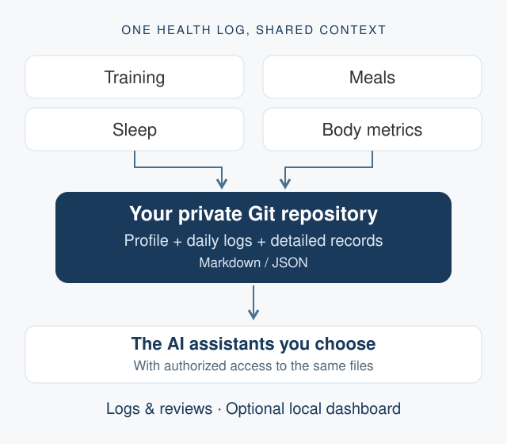

TLDR: AI Health Log is a lightweight template for keeping training, meals, sleep, and body metrics in a single Git repository that different AI assistants can work with. The template is public; your real records belong in a private copy. Source on GitHub.
Where the idea started
The starting point was Alan's conversation with Justin Sun about opportunities in the AI era. The idea of using AI to help organize diet, training, and sleep stood out. AI Health Log turns that idea into a small, practical starting point: keep the records together and give assistants a consistent place to read them.
Give the next assistant the same context
Switching AI assistants often means explaining the same background again: goals, recent workouts, meals, and sleep. Useful context ends up scattered across conversations, while each assistant sees only part of the picture. AI Health Log puts those records in ordinary Markdown and JSON files. An assistant with access can read the profile and existing logs before helping with the next entry or review.
The repository provides a common record across Muse, ChatGPT, Codex, Claude Code, or another assistant. Each still needs a way to access the files, but the context can travel with the data rather than being rebuilt in every chat.

What the template includes
- A simple record structure: a profile for goals and baselines, one daily log with sleep, meals, training, body metrics, and notes, plus separate folders for detailed records.
- SynFit (训记) sync: a Python script that retrieves training records, caches responses by date, updates daily logs, and regenerates an overview and daily reports. Git pushes require the destination repositories to be verified private.
- Shared editing conventions: read existing context before writing, keep API keys outside the repository, and ask for confirmation before writing back to a third-party API.
- An optional Health Log Coach skill: a workflow for recording meals, reviewing workouts and sleep, and preparing daily or weekly reviews while identifying estimates and missing records.
A starting point you can extend
The initial scope is deliberately small: organize the data and make it usable by assistants. From there, a coding assistant can help create a custom skill, connect another data source, or build a local dashboard around the records you actually keep.
The README includes a prompt for building that dashboard, with views for training, weight trends, nutrition estimates, sleep, and data coverage. This is an extension to build, rather than a dashboard bundled with the template. Apple Health data likewise depends on a compatible connector; the included sync script handles SynFit.
Try it with your own records
Start with the README and setup guide. Create a new private repository, copy the template files, fill in your profile, and configure the data sources you want to use. The README also has a setup prompt you can give to your assistant.
Keep real health records and credentials out of the public template. A private repository controls repository access; before sharing its contents with an assistant, review that assistant's permissions and data handling. The goal is a record you can inspect and extend as your workflow develops.
← Back to blog